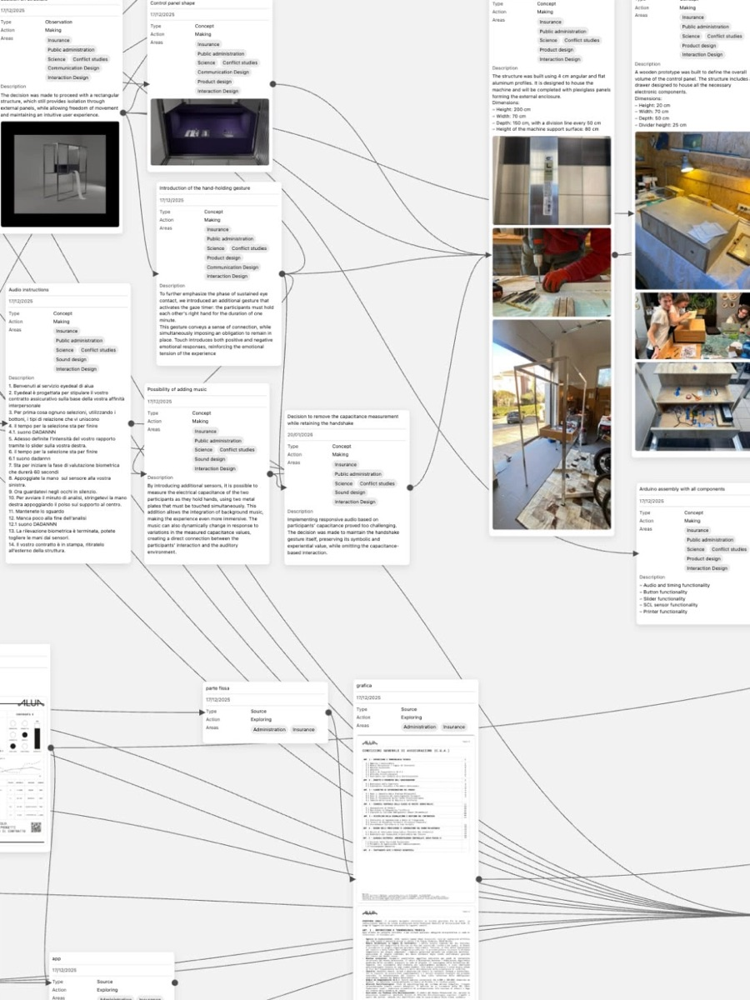
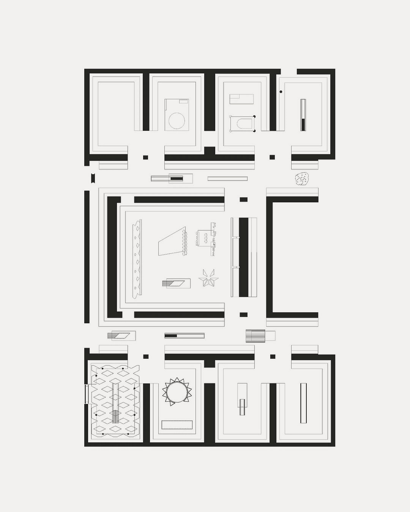
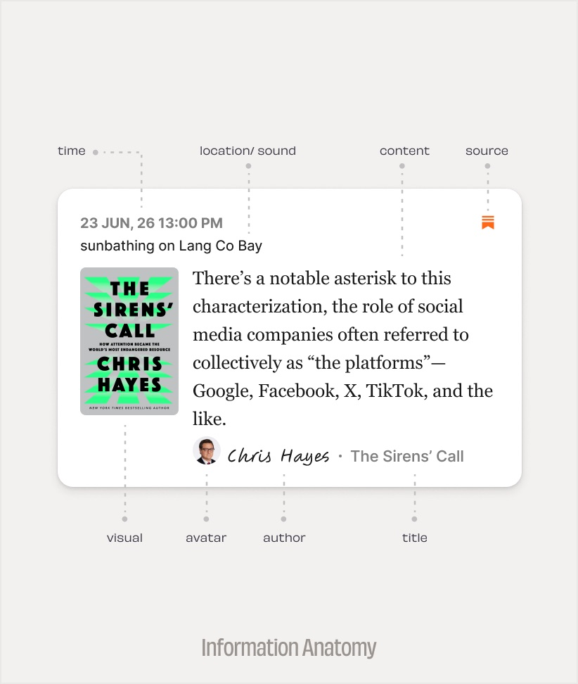
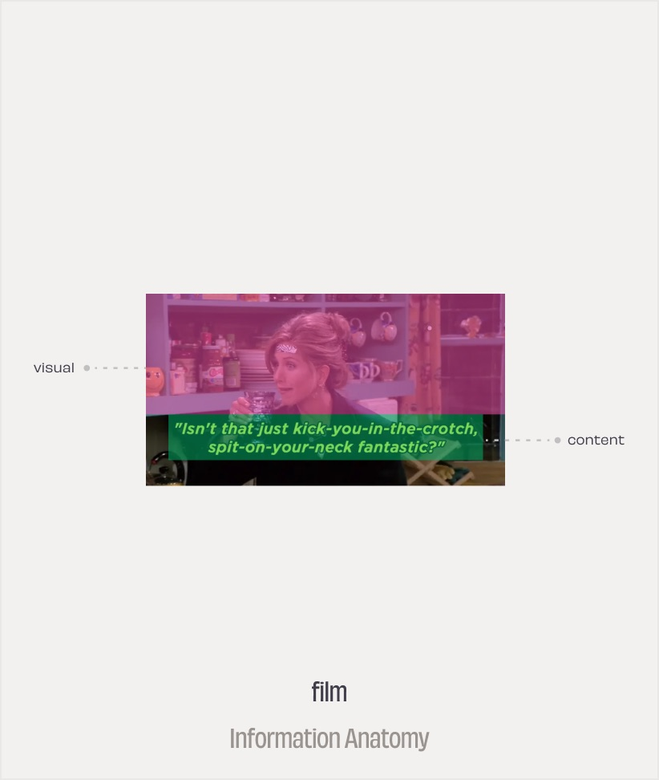
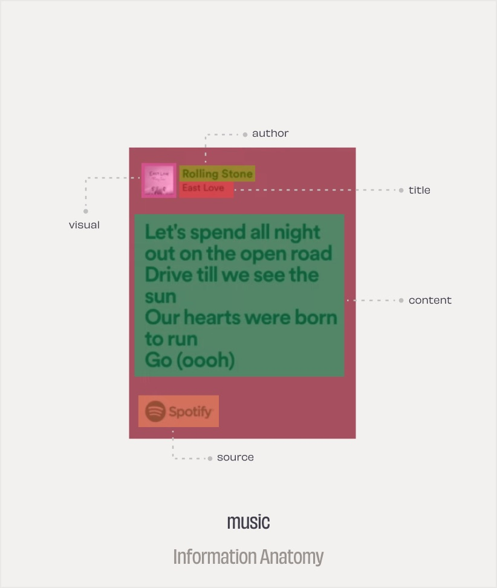
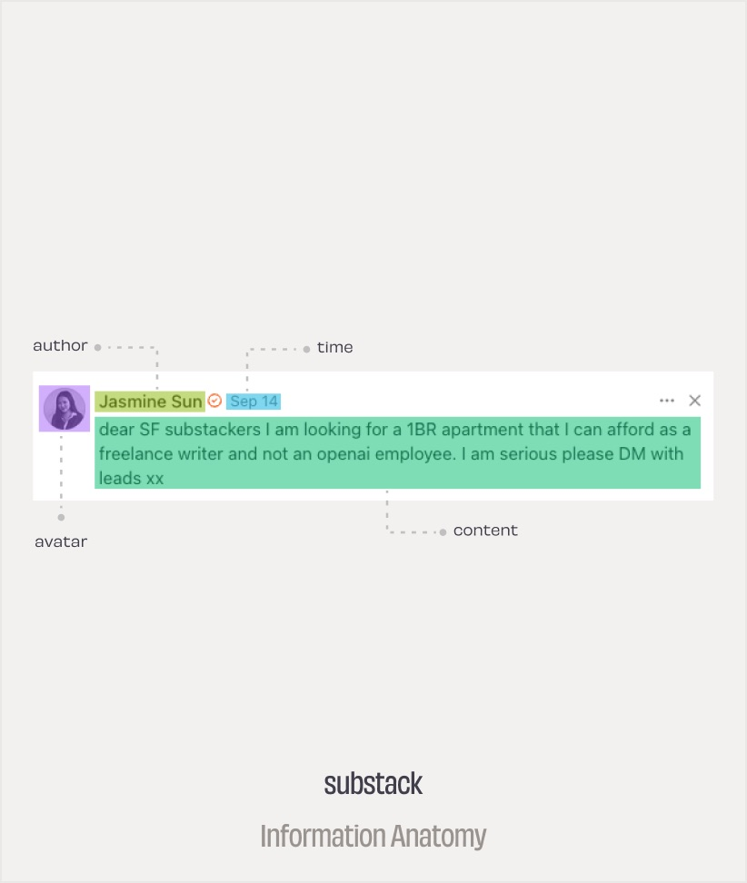
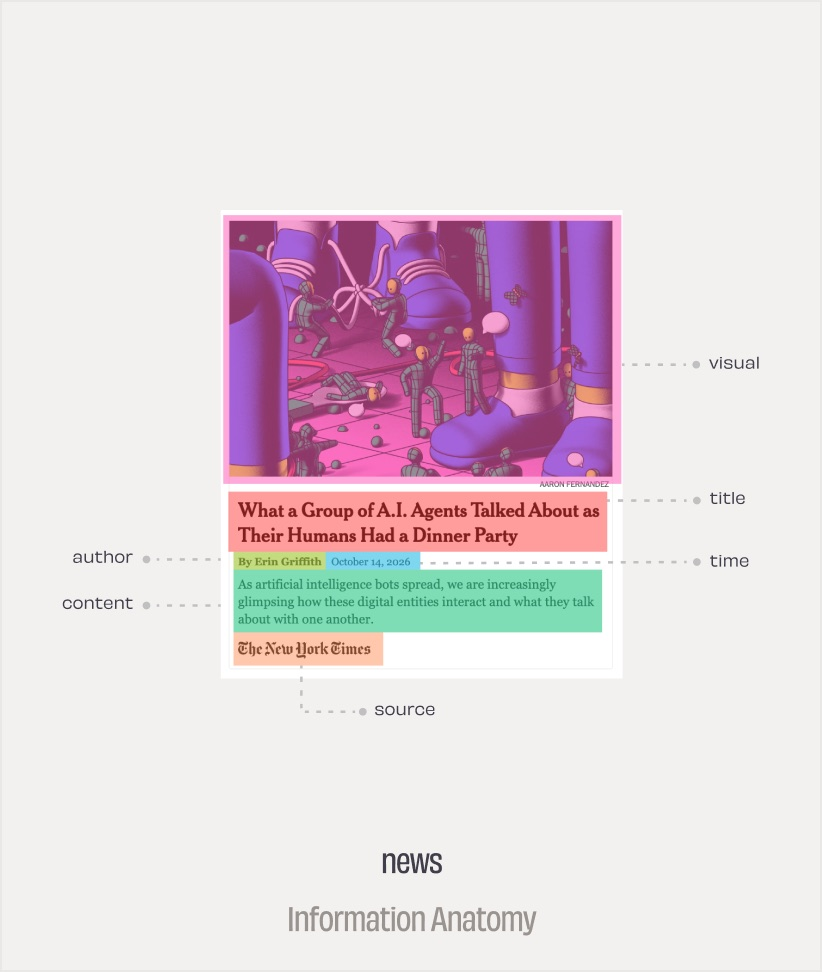
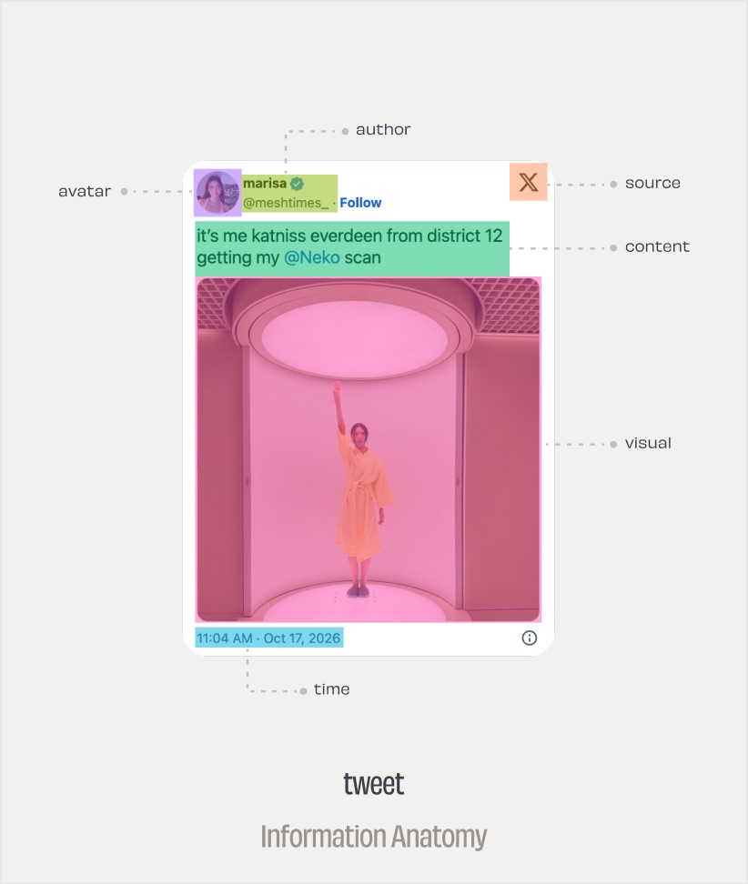
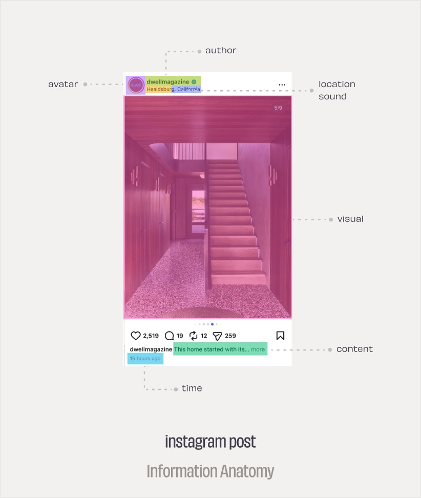

Overview
How might learners collect moments that teach them what a word really means?
The idea grew out of a personal frustration: I could recognize plenty of words and understand their definitions, yet still struggle to use them naturally in context.
Between the courses to cleanse the palate.
Princess DiariesOh, Rapunzel. How you manage to do this everyday without fail, it looks absolutely exhausting, darling.
TangledThey still need someone there.
Like, American eyes and ears to help with the whole transition.
I’m a city inspector, and this pipe is definitely not up to code.
ElementalAnd you don’t really read into
My melancholia
Meet the residents of Element City.
Air usually has their heads in the clouds.
Rather be tied up with calls and not strings.
Seven RingsAndy, be serious.
You are not trying. You are whining.
What is it that you want me to say to you, huh?
That’s the funny thing about birthdays. They’re kind of an annual thing.
TangledI took the project from ideation to launch, owning both product design and development.
Problem: Knowing a word doesn't mean knowing when to use it.
We encounter language through media. A sentence in a book, a line in a film, or a lyric might reveal something memorable about a word. But that insight often gets separated from the word and forgotten.
Definitions don’t capture the full nuance of a word. A word can carry different meanings, tones, and implications depending on its context.
Beyond the definition
What shapes our understanding of a word?
Context
A word's meaning is shaped by the material surrounding it: the sentence, image, conversation, or scene in which it appears.
Interpretation
Learners bring their own observations, associations, and perspectives to the words they encounter.

Connection
A word can take on different nuances across situations. Comparing different usages reveal patterns, contrasts, and subtle shifts in meaning.
Opportunity
What if learners can capture information anchored to context?
Solution
Multimodal flashcards with semantic tags
Flashcards power text, audio and video, allowing context to be captured in its native form, whether you encounter a word in a book, image, song, or conversation.
A word no longer correlates with a definition 1-to-1. Instead, word is the central organizing unit. Media, personal notes, semantic tags all connect back to it.
When you watch Ratatouille or listen to TS’s new song...
Log your interpretation and categorize meaning layers
Type of context
What does context consist of?
My research shows that human remembers better when context of retrieval matches with context that was there when we formed the memory in the first place.

Situational context
Place and time during which we consumed the material
Material storyline
Meaning of the story settings from the material
Exploration: Capturing context
First, I thought of recreating the moment learners engaged with the material.
All-encompassing cards
User describes their whereabouts, what they are doing, hearing or seeing, and when it is in their own voice, along side with the material. Here, context is understood as physical surrounding.







Next, I thought of engaging with the original source more closely through templates.
Medium-native cards
Templates follow the visual of content platforms. Here, context is understood through the source branding.
Learning from user feedback!
While physical surrounding and content platforms have an impact on their memory, users tend to associate meanings of a word with the material storyline.
Solution: Multimodal cards
Finally, I explored a media-led approach to capturing context. Here, context is understood through material representation.
Stories are told through different forms of media, but each encounter has a medium that carries its most distinctive qualities. A passage in a book is experienced through text, a song through sound, and a film scene through imagery. Rather than treating every encounter as text, each card foregrounds the medium most relevant to the original material.
Paired with Notes and Semantic Tags
I found that users need a way to articulate their interpretation of the material. So I introduced
- Notes: “What did I make of it?”,
- Tags: “How does this usage relate to others?”.
Beyond the material
How can we make it easy to put thoughts into words?
Exploration: Capturing thoughts
I first defined the goal of AI assistance: to help users reflect on the material and articulate their thoughts in their own voice. The intended output wasn't a conversation with AI, but a written description of the user's reflection.
Description as the only artifact
This led to an important constraint: chats are disposable.
In many AI products, conversations serve as an artifact users can revisit. But scrolling through previous messages can compete with the goal of this experience: offloading thoughts and arriving at a concise written reflection. I wanted to make the description, rather than the conversation, the primary artifact.
Guidance versus influence
The next question was how AI should participate in the reflection process. How much of its response should users see? Should it offer a one-liner, bullet points, or a paragraph? Should it ask a question or challenge the user's perspective?
We want to encourage deeper thinking without influencing what users thought or thinking on their behalf. Free-flow text allows room to riff on ideas, but considering that the material can be a film, book or paywall-gated resources, AI might not have the full context and can hallucinate.
Exploring the shape of AI response
I looked at adjacent AI products and noticed that reflective journaling tools often guide users towards clearer thinking with prompts. I decided to go with this direction because prompts provide a direction while letting users think independently.
Solution: Condense and Prompt
In the final product, I prompted the model based on multiple reading reflection frameworks and asked AI to do simple edits on grammar and spelling. Users can also share with voice as voice feels like a natural extension of our thoughts.
Reflections
Designing AI-powered features with AI
Context engineering
If AI gives an off answer, the prompt might be over-written or context might not be properly handed over.
Build to decide
AI allows me to explore ideas with high-fidelity prototypes and tap into the rich resources of software design. A lot of my realization came from experiencing the actual app in real time.